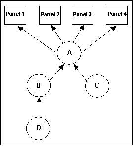
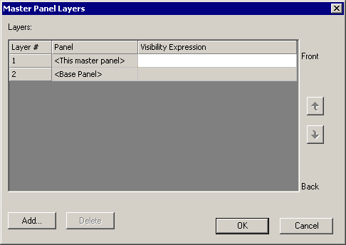

|
|
|
|
|
|
|
|
This feature enables you to incorporate the properties and layouts of other master panels into one master panel. To do this, you would need to link one master panel to another. The linked master panel becomes a layer of the master panel. This feature also provides you with the flexibility to use a master panel that contains all common objects or a master panel that contains some select objects.
For more information on how to set up Master Panel Layers in the Master Panel properties, see Setting Up Master Panel Layers. For more information on how to select a master panel for use on a base panel, see Section 4.7.1.1, Creating a New Panel.

If the base panel is displaying too many master panel layers and you want to limit the layers to view while you are working in the Editor, you can use the right-click menu to hide all or select only the master panel layers you want to view.
The master panel's background color is for design purposes only and does not appear on the base panel.

When you move a master panel using the cut or drag method, you must perform the paste or drop operation immediately to prevent links from breaking. For instance, in between a cut and paste, if you decide to delete or rename a panel, when you eventually paste, the links would be broken.
To avoid broken master panel links, If you reorganize or rename your master panels, you should check the Master Panel Layers dialog box to ensure the correct master panels are specified.
The following example describes how to work with master panel layers. You have created the following master panels and master panel links:
Panel 1, Panel 2, Panel 3, Panel 4 (the base panels that reference master panel A)
Master panel A (contains the company logo; links to master panels B and C)
Master panel B (contains the header)
Master panel C (contains the footer)
Master panel D (contains an image)

Panels 1, 2, 3, and 4 reference master panel A to display the company logo, as well as the header and footer from master panels B and C. The panels also display the image from master panel D, because D is linked to master panel B.
In the Master Panel properties, click the ellipsis button in the Master Panel Layers property to open the Master Panel Layers dialog box.

|
Property |
Description |
|
Layer # |
Shows the order in which the panel layers will be displayed on the target panel at Runtime. You can change the order of the layers by highlighting the layer you want to move, and using the up and down buttons on the right side of the dialog box. The first two layers are always the current master panel and the base panel. If the base panel layer is first, then base panel objects will display on top of the current master panel objects at Runtime. Subsequent layers are master panels. The order that you place the master panel layers will determine their display order, top to bottom, on the current master panel. |
|
Panel |
Displays the name of the panel. This property is read-only. |
|
Visibility Expression |
Select an expression or variable that controls whether the panel layer will show or hide at Runtime. |
To add master panel layers, click Add.
In the Panel List dialog box, select a master panel you want to link to. You can add a maximum of 8 master panel layers. Repeat this step until you complete making all the links or you have reached the limit.
Click OK.
The panels you added become layers of the master panel. If a linked panel contains other layers, they will also be included in the master panel's layers.